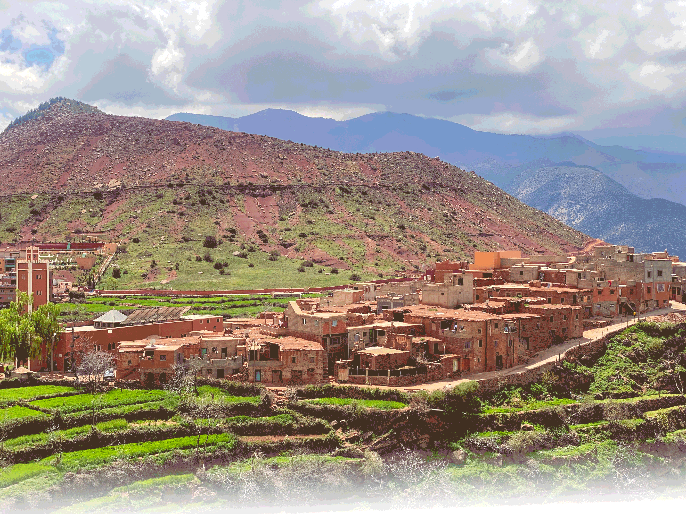
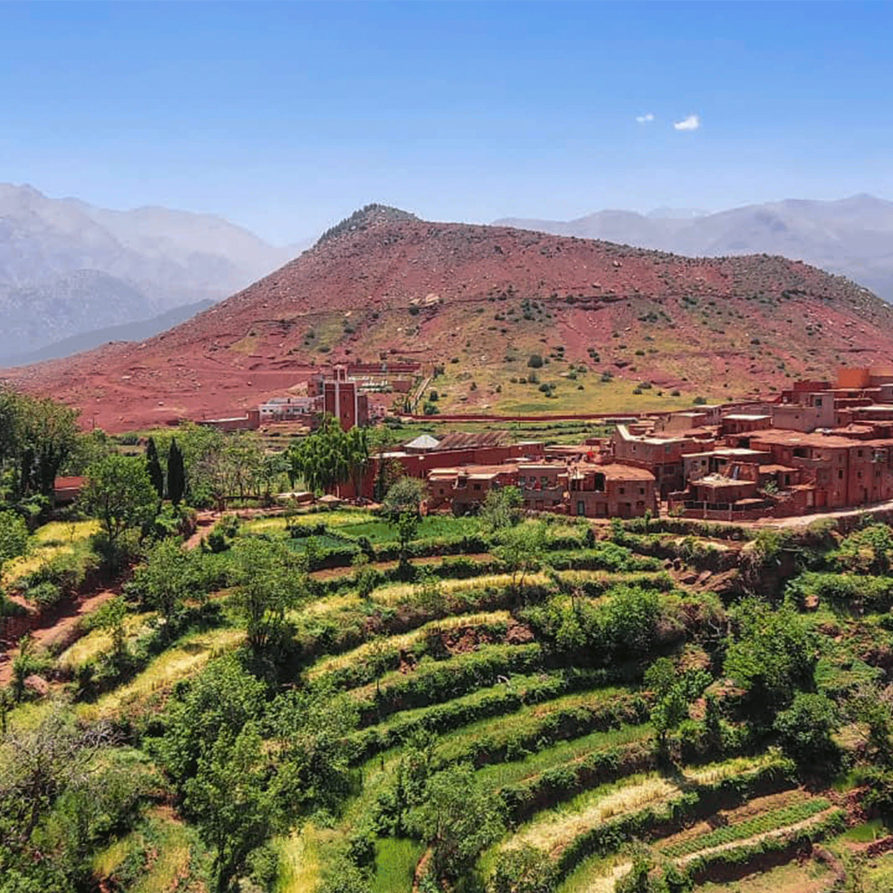
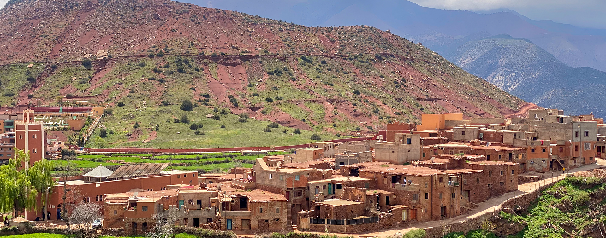
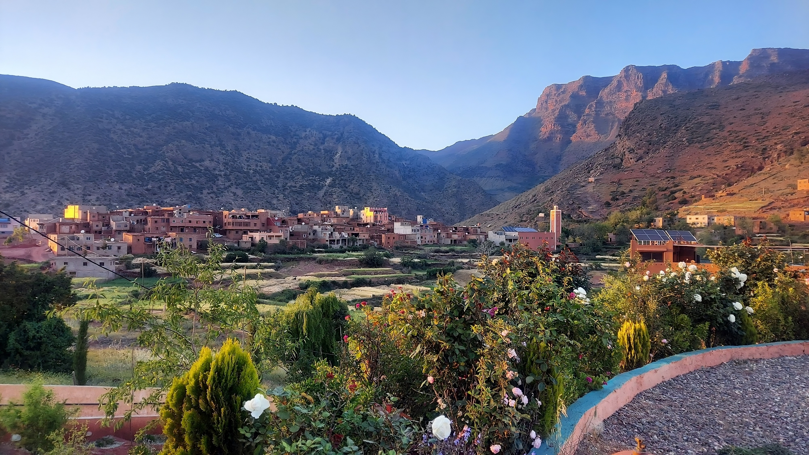
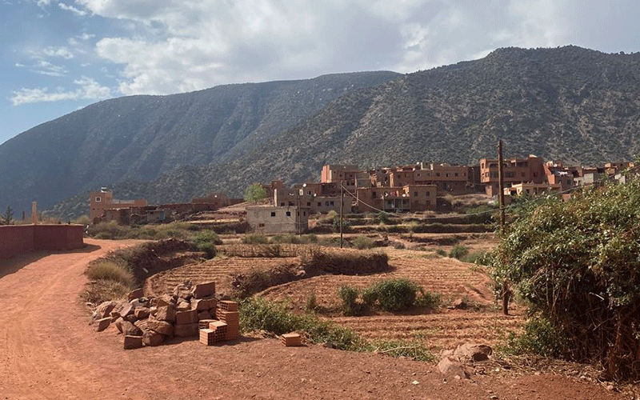

Culture
CultureOurika Valley & Setti Fatma Waterfalls
- DurationFull day
- Departure9:00 AM
- TypePrivate tour
- LunchIncluded by the river
Escape the heat of Marrakech
Trade the warm streets of Marrakech for the cool, green air of the Ourika Valley. This private day trip takes you into the High Atlas foothills, where the river runs cold, the mountains rise high, and Berber village life is still lived at its own pace.
You will travel with a driver who knows the valley well and explains what you are passing. The day mixes nature, Berber culture, and time to simply relax beside the water. The highlight is a guided climb to the Setti Fatma waterfalls, where the air is cooler and the sound of the river follows you the whole way.
Because this is a private tour, the pace is yours. The driver will adapt stops to your interests, and the local guide on the waterfall path walks at your speed.

Tour information
The essentials
- Duration: Full day
- Departure: 9:00 AM from your hotel or riad in Marrakech
- Type: Private tour
- Transport: Air-conditioned vehicle with driver-guide
- Availability: Daily, subject to confirmation
- Optional: Short 4x4 transfer up the valley instead of walking
Good to know
- Wear comfortable walking shoes
- Bring sun protection and water
- The waterfall path is uneven in places
- Vegetarian lunch is available on request
- The Berber market stop depends on the day of the week
Trip highlights
Ourika Valley
The green heart of the High Atlas, with terraced fields and riverside villages.
Setti Fatma waterfalls
A guided climb to the falls with a local guide who knows the path well.
Pottery visit
See the traditional pottery-making process, from clay to finished piece.
Berber market
A weekly market (Mondays, Thursdays, Fridays) full of local produce and craft.
Tea by the river
A pause beside the water, with a short introduction to Berber culture.
Riverside lunch
Berber couscous, tajine, or turkey skewers, with salad and dessert.
Your day, step by step
9:00 AM
Pickup from your hotel or riad
Your driver-guide meets you at your accommodation in Marrakech. Along the way, he explains the villages, the landscape and the Berber life of the valley you are about to enter.
First stop
Coffee break by the road
A simple pause on the road out of Marrakech. Coffee, mint tea and a first glimpse of the Atlas foothills.
Second stop
Pottery visit
A local workshop where you watch the traditional pottery-making process: clay being shaped, dried and fired. A chance to see a craft that has been passed down through families.
Third stop
Weekly Berber market
On Mondays, Thursdays and Fridays, the weekly market brings farmers and artisans together from the surrounding villages. Your driver will adjust the route if the market is not running on your day.
Around 11:00 AM
Arrival in the Ourika Valley
Reach the second starting point of the day, near Setti Fatma. You begin the walk up the valley on foot, or take a 4x4 for the steeper part if you prefer. Either way, the view opens up over the Atlas mountains.
Fourth stop
Tea by the river and Berber culture
Settle beside the river for a tea break. Your guide explains a little about Moroccan and Berber culture: village life, traditions, and the role the river plays for the villages.
Fifth stop
Climb to the Setti Fatma waterfalls
A local guide leads you along the path up to the Setti Fatma waterfalls. The trail crosses terraced gardens and small stone bridges, and reaches the falls after a moderate climb.
Lunch
Lunch by the river
A proper Berber lunch beside the water: couscous, tajine, or turkey skewers — with salad and dessert included. Vegetarian options (such as vegetable tajine) are available on request.
Optional
Bread-making and weaving workshops
At the village, you can join short bread-making or weaving workshops to spend a little more time with local families. Availability depends on the day and should be confirmed with your guide in advance.
Return
Descent by a different path
You walk back down by a different path to rejoin the transport in the valley, then drive back to Marrakech in the late afternoon.
What's included
- Hotel or riad pickup and drop-off in Marrakech
- Air-conditioned vehicle with driver-guide
- Local guide on the Setti Fatma waterfall path
- Lunch by the river (couscous, tajine or turkey skewers, salad, dessert)
- Tea break by the river
- Pottery visit and weekly market stop when applicable
Not included
- Drinks at the coffee break
- Optional 4x4 transfer up the valley
- Optional bread-making and weaving workshops
- Tips for the guide and driver
- Market purchases and personal expenses
Photo gallery






Good to know
What time is pickup?
Pickup is at 9:00 AM from your hotel or riad in Marrakech. We confirm the exact time with you on WhatsApp when you book.
Is this a private tour?
Yes. The day runs just for your group, with your own driver-guide and a local guide on the waterfall path.
Is the Berber market always included?
The market runs on Mondays, Thursdays and Fridays. On other days, your driver will replace it with a photo stop or a visit to a local cooperative so you still get to see the region's everyday life.
Do I have to walk up to the waterfalls?
The walk is moderate and takes around 45 to 60 minutes on the way up. If you would prefer a shorter walk, a 4x4 can take you part of the way up the valley — just tell your driver at the start of the day.
What is for lunch?
A Berber lunch by the river: couscous, tajine, or turkey skewers, served with salad and dessert. Vegetarian options such as a vegetable tajine are available — please tell us in advance.
Are the workshops extra?
Bread-making and weaving workshops at the village are optional and depend on local availability. Your guide can arrange them on the day, or you can ask about them when you book.
Book or ask about this trip
More day trips
Keep exploring the Atlas
Culture Hiking
HikingReady when you are